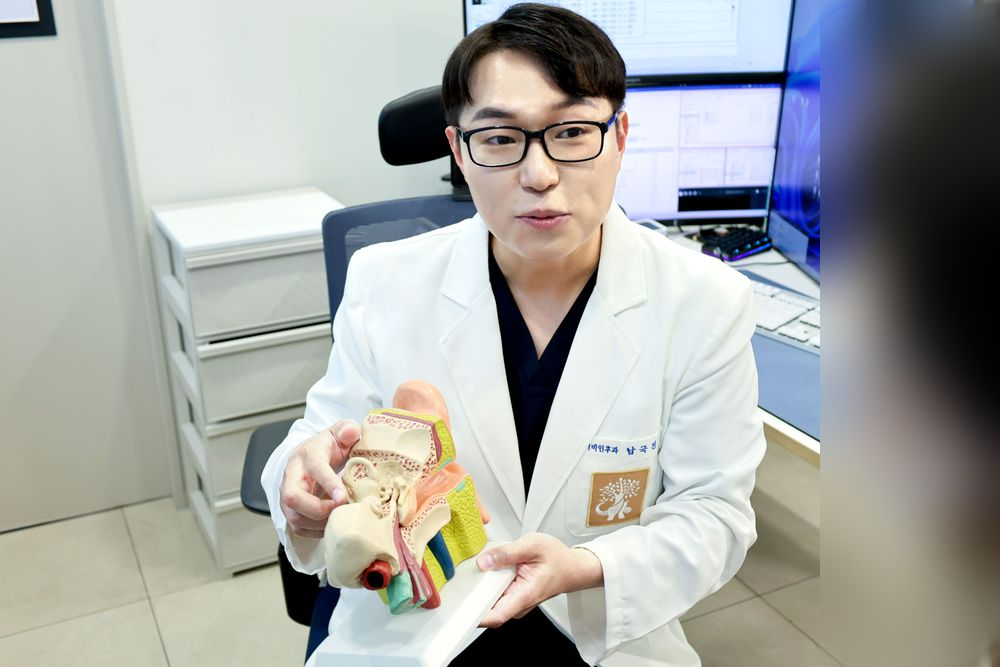
귀
어지럼증 · 난청 · 이명
- 어지럼증이석증, 전정신경염, 메니에르병 등. 비디오 안진검사와 자율신경검사로 원인을 구분합니다.
- 난청순음·어음청력검사, 고막운동성검사로 난청의 종류와 정도를 확인합니다.
- 이명청력과 함께 평가하고, 생활 속 관리 방법까지 안내합니다.
- 중이염내시경으로 고막 상태를 확인하고 치료합니다.
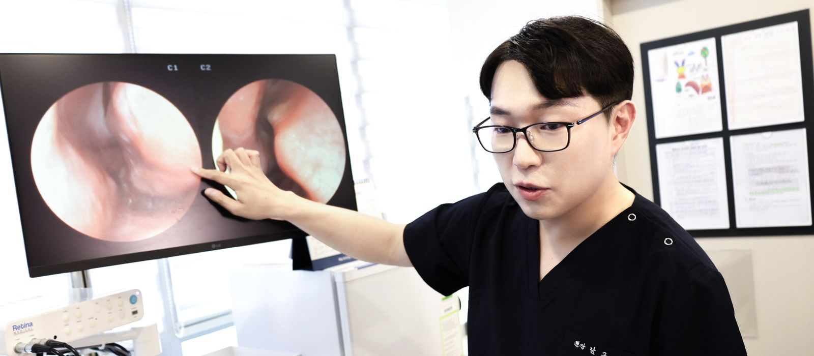
진료분야
증상만 듣고 끝내지 않고, 필요한 검사를 거쳐 원인을 찾습니다.

귀
수면
코
목
검사 장비
다른 병원으로 옮겨 다니지 않도록, 진료에 필요한 검사 장비를 갖추고 있습니다.
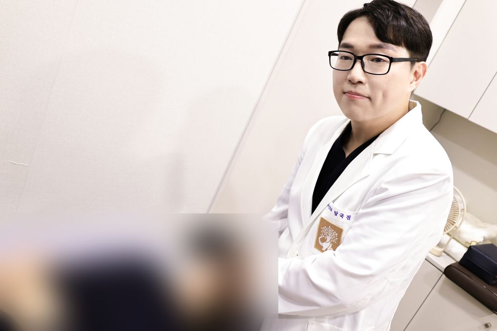
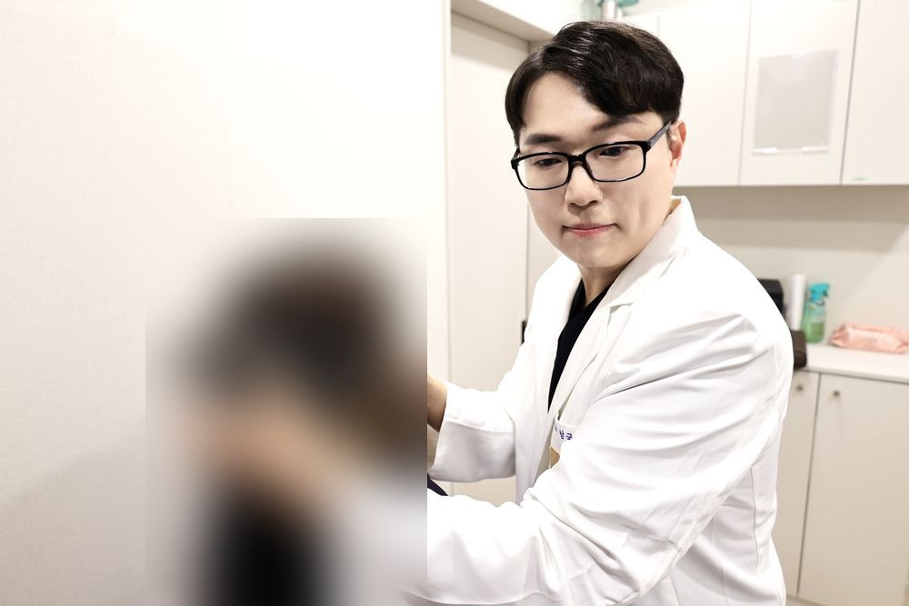
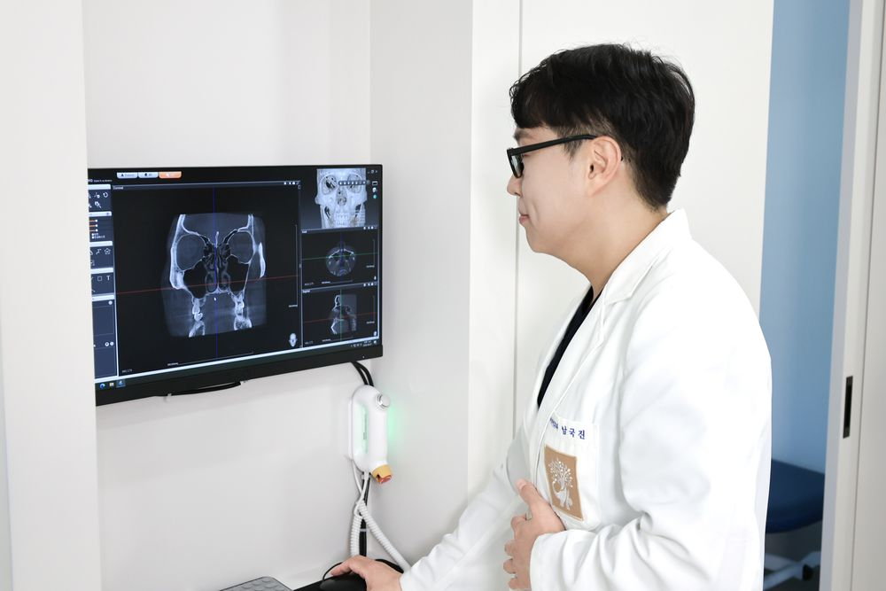
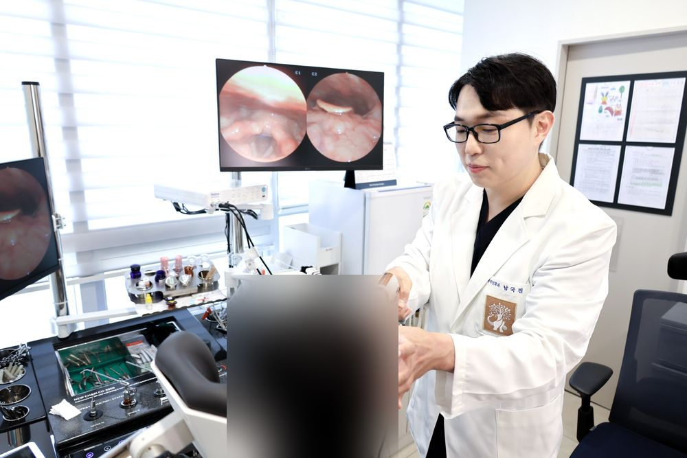
어지럼증
눈떨림(안진)을 기록해 귀와 뇌 중 어디에서 생긴 어지럼인지 구분합니다.
어지럼증
자세를 바꿀 때 혈압·맥박 변화를 보고 기립성 저혈압을 진단합니다.
어지럼증
현재 균형 상태를 객관적으로 측정해 전정재활 계획을 세웁니다.
청력
순음·어음청력검사로 난청의 정도를 확인합니다.
청력
고막의 움직임과 달팽이관 기능을 검사합니다.
청력
청신경의 반응을 측정합니다. 청신경종양 확인과 장애진단에 사용합니다.
수면
수면 중 호흡, 산소포화도, 뇌파 등을 측정합니다.
코·부비동
부비동과 귀 구조를 촬영해 바로 결과를 설명드립니다.
진료
귀·코·목을 내시경으로 한자리에서 관찰합니다.
둘러보기
진료실, 청력검사실, 수면검사실, CT실이 모두 같은 층에 있습니다.
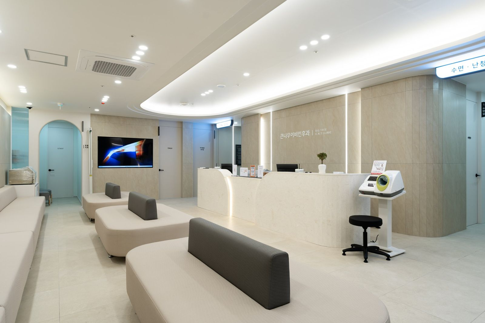
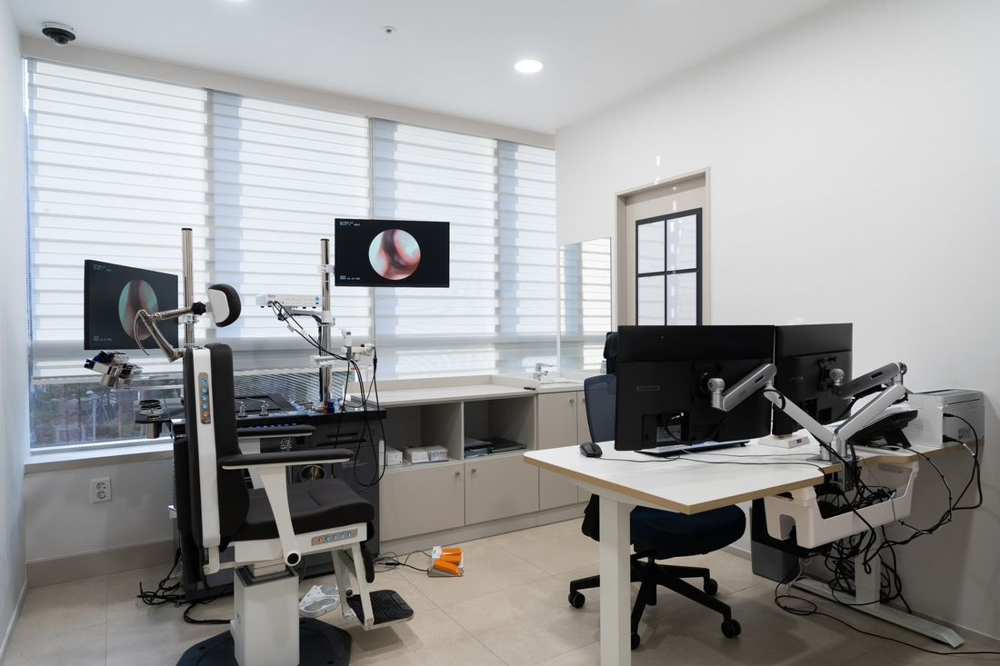
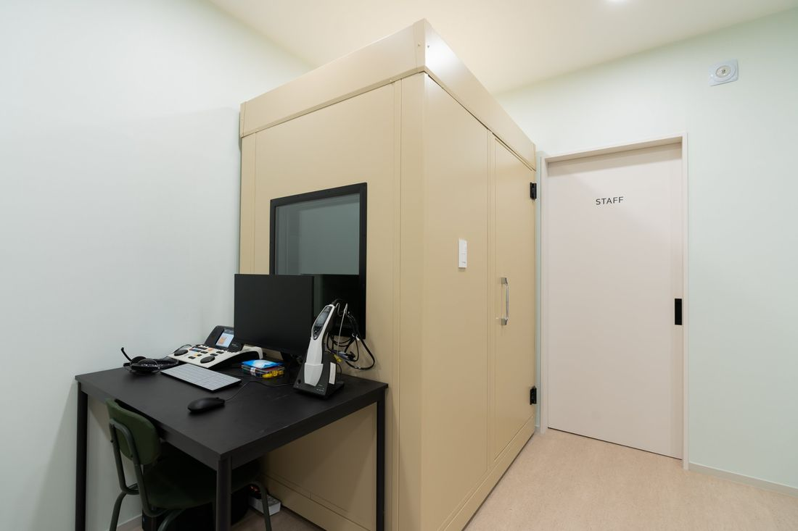
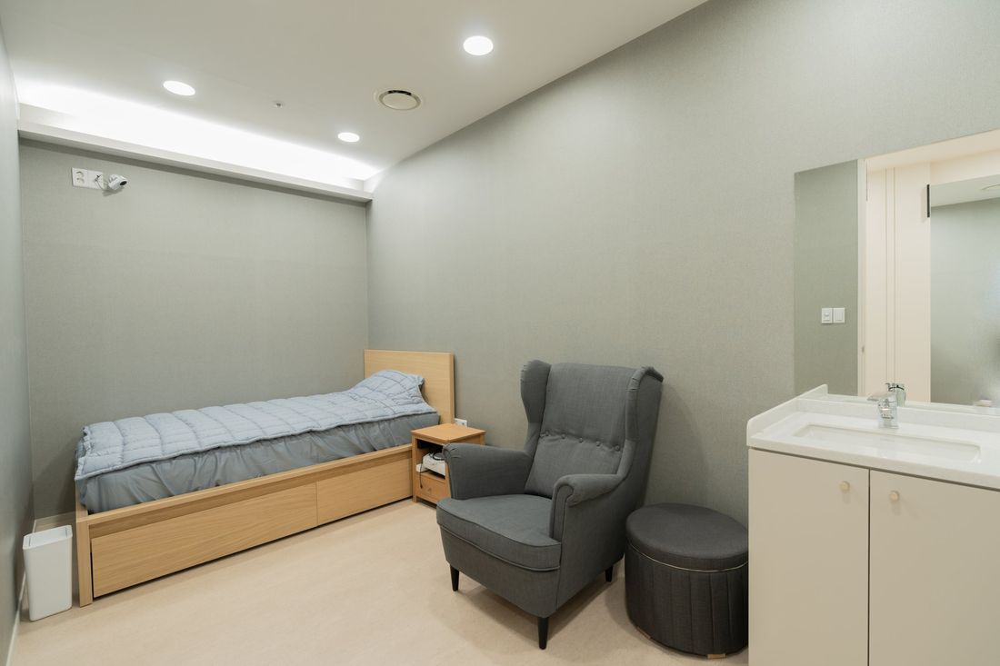
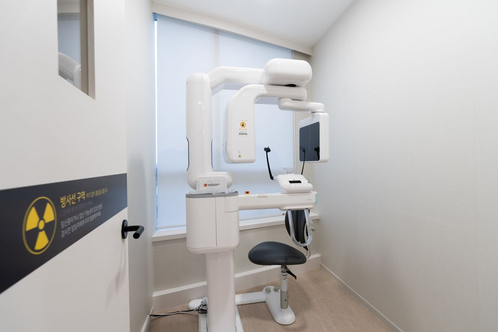
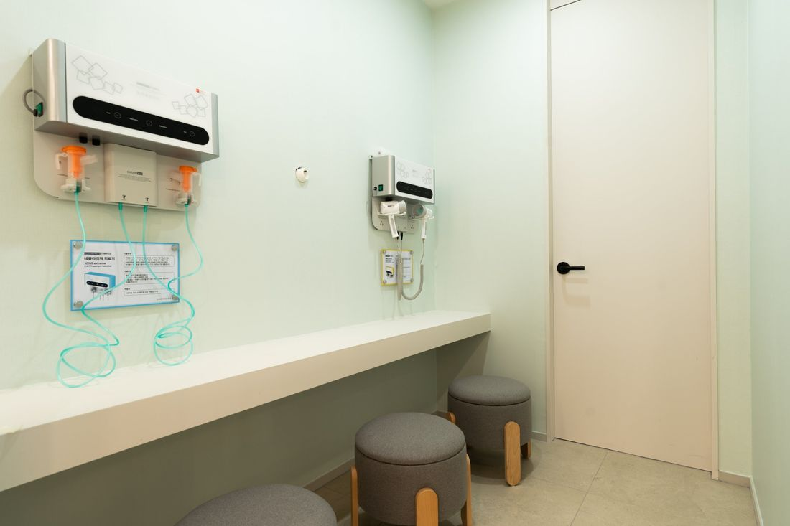
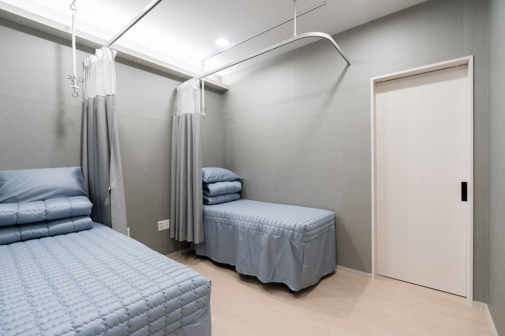
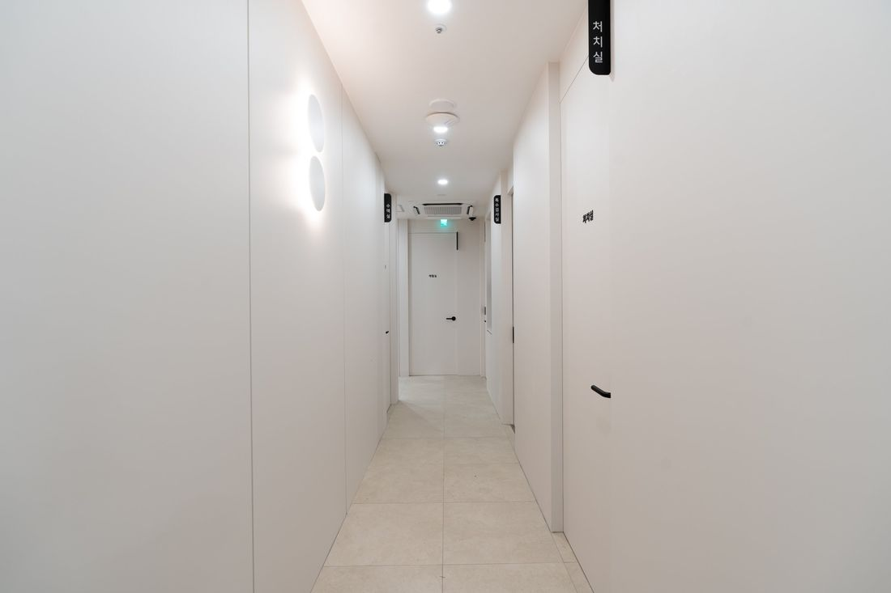
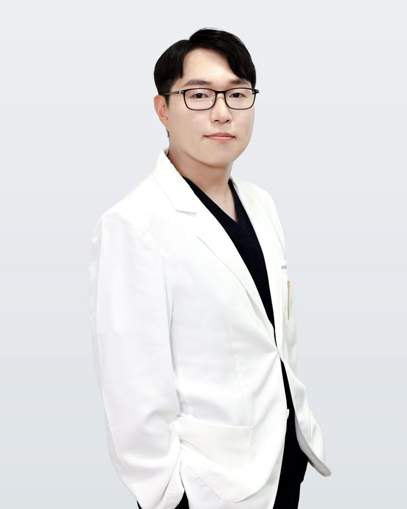
의료진
검사 결과를 화면으로 함께 보며, 이해하실 때까지 설명드리겠습니다.